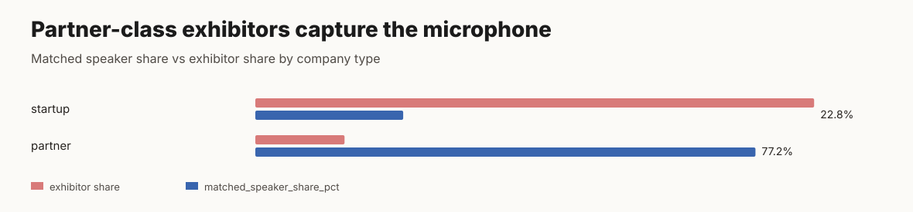
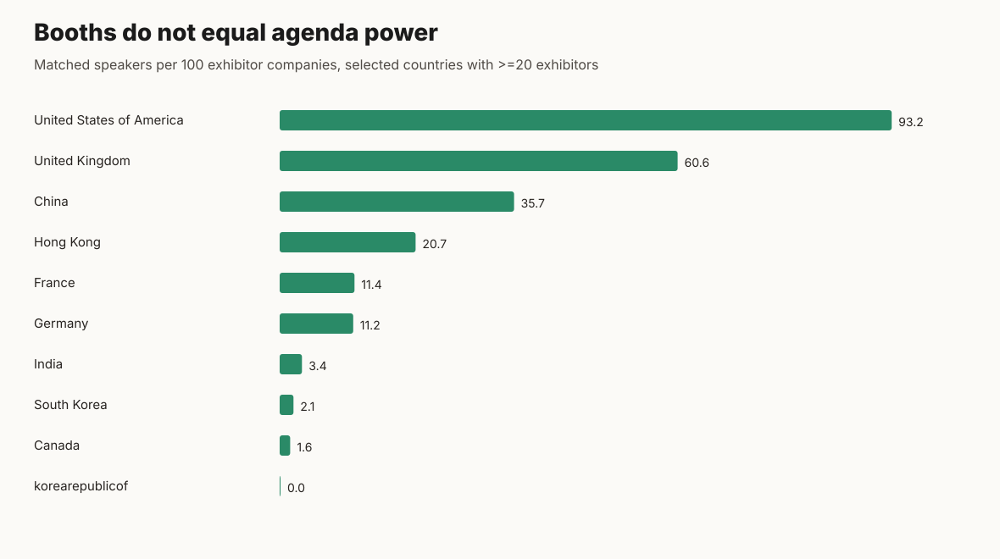
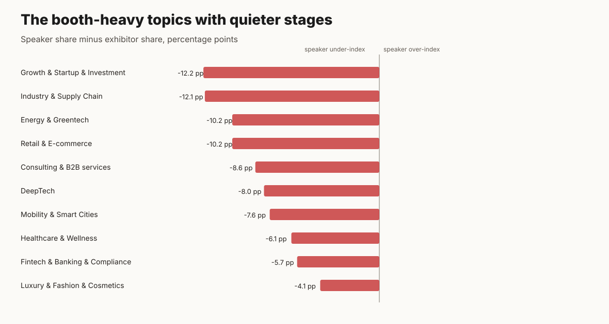
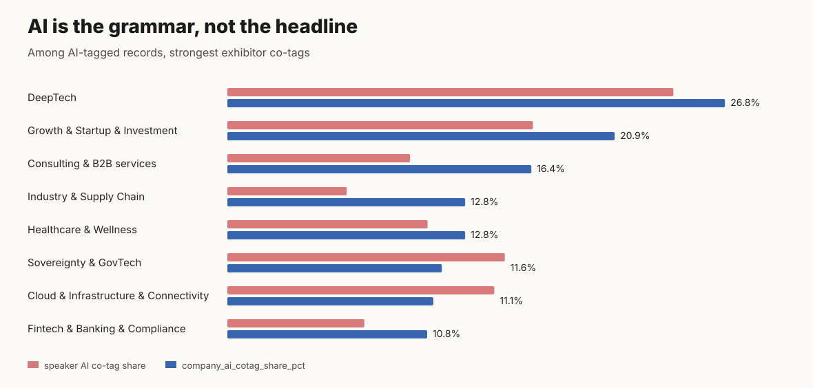
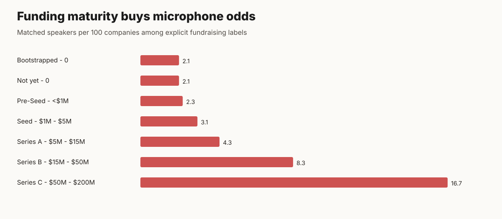
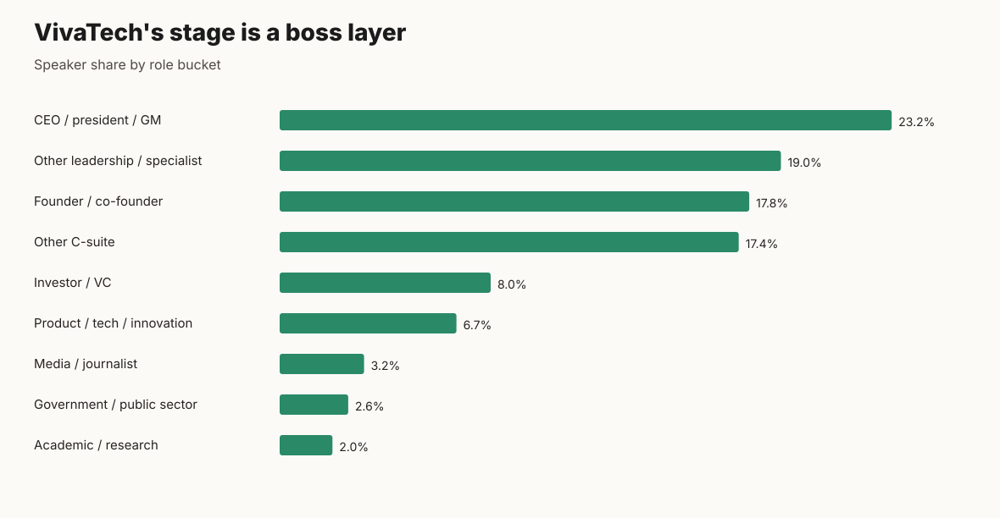
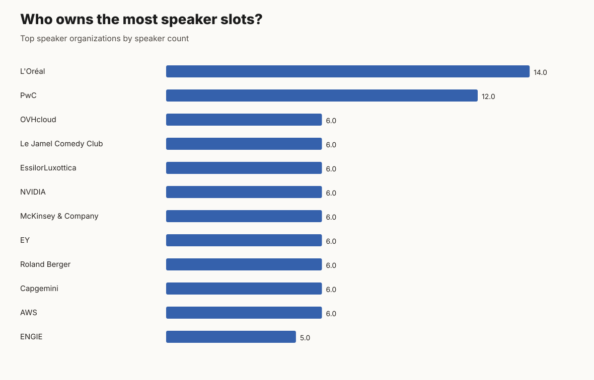

VivaTech's floor is startup; its microphone is institutional.
A deliberately sharper evidence pack from the VivaTech exhibitor and speaker data. The point is not outrage by vibes: every claim below has a numerator, denominator, caveat, and reusable chart.
controversy 5/5 · defensibility 5/5
Partners are 21.2x louder per company than startups.
Partners are 13.8% of exhibitors but 77.2% of matched speaker slots; startup exhibitors are 86.2% of the floor but 22.8% of matched speaker slots.
It turns a generic startup-event narrative into a power-distribution claim: the floor sells startup energy, while the microphone rewards institutions.
Caveat: Only speakers whose organizations conservatively match exhibitors are included; unmatched speakers may change some shares but not the exhibitor-side imbalance.

controversy 5/5 · defensibility 5/5
93.9% of exhibitors appear voiceless in the speaker program.
Only 191 of 3153 exhibitors have at least one matched speaker; for startups the no-matched-speaker rate is 97.4%.
It gives founders a blunt way to talk about the difference between buying/earning a booth and owning agenda visibility.
Caveat: This is based on public listing data and conservative organization matching, not internal stage selection data.
controversy 5/5 · defensibility 4/5
The US has fewer booths than India, but roughly 27x the matched-speaker density.
US: 73 exhibitors and 68 matched speakers (93.2 per 100 companies). India: 88 exhibitors and 3 matched speakers (3.4 per 100).
It reframes country presence from booth count to agenda leverage, which is much more politically sensitive.
Caveat: Country values come from exhibitor records after matching; country normalization and unmatched speaker organizations can move this metric.

controversy 4/5 · defensibility 5/5
Retail has 337 exhibitors but only 6 speakers: a booth-heavy topic with almost no mic.
Retail & E-commerce is 10.7% of exhibitor tags but 0.5% of speaker tags, a -10.2 percentage point speaker under-index.
It challenges the commercial reality of tech events: some market categories pay/show up, but do not get to define the public agenda.
Caveat: Tag fields are multi-select listing tags, so counts represent tagged records rather than exclusive categories.

controversy 4/5 · defensibility 5/5
AI is so saturated that it has stopped being the interesting label.
1513 of 3153 exhibitors (48.0%) and 528 of 1133 speakers (46.6%) carry the AI/Robotics tag.
It punctures the easy AI hype angle: the more interesting story is which categories AI attaches to and which still get ignored.
Caveat: This is tag-level saturation, not a measure of product depth, revenue, or actual AI capability.

controversy 4/5 · defensibility 4/5
Korea has 153 exhibitor records after normalizing the split label, but only 2 matched speakers.
`South Korea` has 96 exhibitors and `korearepublicof` has 57. Combined density is 1.3 matched speakers per 100 companies, versus 93.2 for the US.
It is both a data-quality gotcha and a market-visibility claim: a large booth presence can still be nearly silent on the matched stage layer.
Caveat: The raw country split must be normalized before any official country ranking; unmatched Korean speaker organizations may be missing from the conservative match.
controversy 4/5 · defensibility 4/5
Among explicit funding labels, Series C startups have about 8x the mic density of bootstrapped companies.
Series C: 16.7 matched speakers per 100 companies. Bootstrapped: 2.1 per 100. Pre-seed: 2.3 per 100.
It makes the prestige gradient visible: the event may celebrate early startups, but later-stage companies are much more stage-visible.
Caveat: Series C has only 24 companies, and partner records often have unspecified fundraising; use this as a directional signal, not a causal claim.

controversy 4/5 · defensibility 4/5
The speaker program is a boss layer: 58.4% are CEOs/founders/C-suite.
CEO/president/GM, founder/co-founder, and other C-suite buckets total 662 of 1133 speakers. Government/public-sector speakers are only 2.6% of speakers but are top-billed at 23.3% inside their bucket, 5.6x the overall top-speaker rate.
It names the social structure of the stage: not a broad worker/practitioner program, but a leadership and legitimacy program.
Caveat: Role buckets are keyword-derived from public job titles and should be reviewed manually before publication.

controversy 3/5 · defensibility 5/5
The public exhibitor list is a taxonomy machine, not a discovery engine.
3153 exhibitor short descriptions are empty (100.0%), and 1349 fundraising fields are missing (42.8%).
It shifts criticism from individual exhibitors to platform design: the listing is better for sorting than understanding.
Caveat: Detail pages may contain richer text; this claim is scoped to the listing payload used for bulk discovery.
controversy 3/5 · defensibility 4/5
A few organizations can bend the agenda more than thousands of booths can.
The top 10 speaker organizations account for 74 speaker records (6.5% of all speakers), led by L'Oreal and PwC.
It makes agenda-setting visible without needing private sponsorship data.
Caveat: The top-organization table uses displayed speaker organization names; some subsidiaries and country suffixes may split or merge imperfectly.
